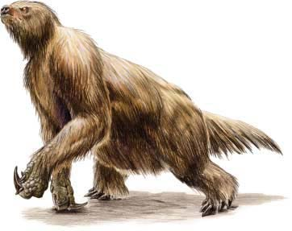

超大型动物

| 生命骰： | 13d10+91 (162 hp) |
| 先攻： | +1 |
| 速度： | 40 英尺 |
| 防御等级： | 24 (�C2 体型，+1 敏捷，+15 天生)，接触 9，措手不及 23 |
| 基本攻击／擒抱： | +9/+25 |
| 攻击： | 爪抓 +16 近战 |
| 全力攻击： | 2 爪抓 +16 近战 和 啮咬 +10 近战 |
| 伤害： | 爪抓 2d4+8/19�C20，啮咬 2d6+4 |
| 面宽／触及： | 15 英尺/10 英尺 |
| 特殊攻击： | 精通攫抓，压倒，践踏 2d8+12 |
| 特殊能力： | 黑暗视觉 60 英尺，昏暗视觉，灵敏嗅觉 |
| 豁免： | 强韧 +17，反射 +9，意志 +5 |
| 属性： | 力量 27，敏捷 13，体质 24，智力 2，感知 13，魅力 8 |
| 技能： | 聆听 +11，侦察 +11 |
| 专长： | 警觉，强韧加强，精通重击（爪抓），猛力攻击，武器专攻（爪抓） |
| 地域： | 任意森林、丘陵或平原 |
| 组织： | 单独或家族 (2�C4) |
| 挑战等级： | 8 |
| 宝物： | ― |
| 阵营： | 总是中立 |
| 进化： | 14�C16 HD (超大型)；17�C26 HD (巨型) |
地懒，亦称巨型地懒，在其居住地占据着主导地位。几乎没有天敌敢于挑战它们，因为地懒坚韧的外皮使其难以被捕获。
一只地懒身长近 20 英尺，肩部高度与人类相当。然而，这种生物极少四足行走，因为它更倾向于用后腿直立行走。成年个体以此种方式站立时，高度约为 15 英尺。地懒全身覆盖着蓬松的毛皮，能有效保护其免受环境影响，其牙齿也符合其杂食性饮食需求。
尽管它们大多独居，但当地懒决定需要肉类来补充其以植食为主的饮食时，很少有其他生物能阻挡它们。和大多数哺乳动物一样，地懒在交配季节或保护幼崽时表现得极具攻击性。
地懒会试图先践踏最近的敌人，再动用其利爪。它利用其触及距离和精通攫抓能力建立擒抱；随后它将受害者压制在地，同时用另一只爪和啮咬击退其他敌人。
精通攫抓 (Improved Grab) (Ex)：如果地懒用爪抓攻击命中一个体型至少比它小一级的对手，它在造成正常伤害的同时，能以一个不会引发借机攻击的自由动作尝试开始擒抱（擒抱加值 +25）。如果擒抱成立，它可以在下一次成功的擒抱检定后将对手压倒。此后，地懒可以选择正常进行擒抱，或仅用其爪抓来钳制对手（擒抱检定承受�C20减值，但地懒不被视为被擒抱）。无论哪种情况，它在后续轮中每次成功的擒抱检定都会自动造成爪抓伤害。
压倒 (Pin Down) (Ex)：地懒可以针对一个已被擒抱的对手进行一次擒抱检定以尝试将其压倒。若成功，对手被压制在地懒的爪下。被压倒的对手在其被压制的每轮都会受到践踏伤害，包括压制成立的那一轮。
践踏 (Trample) (Ex)：作为一个标准动作，地懒可以践踏体型至少比它小一级的对手。此攻击造成 2d8+12 点钝击伤害。被践踏的对手可以选择进行一次承受�C4罚值的借机攻击，或进行一次反射豁免（DC 24）使伤害减半。
灵敏嗅觉 (Scent) (Ex)：地懒可以察觉逼近的敌人，嗅出隐藏的敌人，并通过气味追踪。